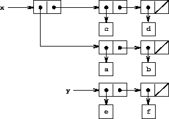
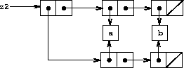
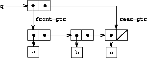

|
Chapter 2 dealt with compound data as a means for constructingcomputational objects that have several parts, in order to modelreal-world objects that have several aspects. In that chapter weintroduced the discipline of data abstraction, according to which datastructures are specified in terms of constructors, which create dataobjects, and selectors, which access the parts of compound dataobjects. But we now know that there is another aspect of data thatchapter 2 did not address. The desire to model systems composed ofobjects that have changing state leads us to the need to modifycompound data objects, as well as to construct and select from them.In order to model compound objects with changing state, we will designdata abstractions to include, in addition to selectors andconstructors, operations called mutators, which modify dataobjects. For instance, modeling a banking system requires us tochange account balances. Thus, a data structure for representing bankaccounts might admit an operation
(set-balance! <account> <new-value>)
that changes the balance of the designated account to the designatednew value. Data objects for which mutators are defined are known asmutable data objects.
Chapter 2 introduced pairs as a general-purpose “glue” forsynthesizing compound data. We begin this section by defining basicmutators for pairs, so that pairs can serve as building blocks forconstructing mutable data objects. These mutators greatly enhance therepresentational power of pairs, enabling us to build data structuresother than the sequences and trees that we worked with insection 2.2. We also present some examples ofsimulations in which complex systems are modeled as collections ofobjects with local state.
The basic operations on pairs – cons, car, and cdr – can be used to construct list structure and to select partsfrom list structure, but they are incapable of modifying liststructure. The same is true of the list operations we have used sofar, such as append and list, since these can be definedin terms of cons, car, and cdr. To modify liststructures we need new operations.
|  |
|
 |
 |
The primitive mutators for pairs are set-car! and set-cdr!. Set-car! takes two arguments, the first of whichmust be a pair. It modifies this pair, replacing the carpointer by a pointer to the second argument of set-car!.16
As an example, suppose that x is bound to the list ((a b) cd) and y to the list (e f) as illustrated infigure 3.12. Evaluating the expression (set-car!x y) modifies the pair to which x is bound, replacing its car by the value of y. The result of the operation is shown infigure 3.13. The structure x has been modified andwould now be printedas ((e f) c d). Thepairs representing the list (a b), identified by the pointerthat was replaced, are now detached from the originalstructure.17
Compare figure 3.13 with figure 3.14,which illustrates the result of executing (define z (cons y (cdrx))) with x and y bound to the original lists offigure 3.12. The variable z is now bound to anew pair created by the cons operation; the list to which x is bound is unchanged.
The set-cdr! operation is similar to set-car!. Theonly difference is that the cdr pointer of the pair, rather thanthe car pointer, is replaced. The effect of executing (set-cdr! x y) on the lists of figure 3.12 is shownin figure 3.15.Here the cdr pointer of x has been replaced by the pointerto (e f). Also, the list (c d), which used to be the cdr of x, is now detached from the structure.
Cons builds new list structure by creating new pairs, whileset-car! and set-cdr! modify existing pairs. Indeed, wecould implement cons in terms of the two mutators, together witha procedure get-new-pair, which returns a new pair that is notpart of any existing list structure. We obtain the new pair, set itscar and cdr pointers to the designated objects, and returnthe new pair as the result of the cons.18
(define (cons x y) (let ((new (get-new-pair))) (set-car! new x) (set-cdr! new y) new))
Exercise 3.12. The following procedure for appending lists was introduced insection 2.2.1:
(define (append x y) (if (null? x) y (cons (car x) (append (cdr x) y))))
Append forms a new list by successively consing theelements of x onto y. The procedure append! issimilar to append, but it is a mutator rather than a constructor.It appends the lists by splicing them together, modifying the finalpair of x so that its cdr is now y.(It is an error to call append! with an empty x.)
(define (append! x y) (set-cdr! (last-pair x) y) x)
Here last-pair is a procedure that returns the last pair in itsargument:
(define (last-pair x) (if (null? (cdr x)) x (last-pair (cdr x))))
Consider the interaction
(define x (list 'a 'b)) (define y (list 'c 'd)) (define z (append x y)) z (a b c d) (cdr x) <response> (define w (append! x y)) w (a b c d) (cdr x) <response>
What are the missing <response>s?Draw box-and-pointer diagrams to explain your answer.
Exercise 3.13. Consider the following make-cycle procedure, which uses the last-pair procedure defined in exercise 3.12:
(define (make-cycle x) (set-cdr! (last-pair x) x) x)
Draw a box-and-pointer diagram that shows the structure zcreated by
(define z (make-cycle (list 'a 'b 'c)))
What happens if we try to compute (last-pair z)?
Exercise 3.14. The following procedure is quite useful, although obscure:
(define (mystery x) (define (loop x y) (if (null? x) y (let ((temp (cdr x))) (set-cdr! x y) (loop temp x)))) (loop x '()))
Loop uses the “temporary” variable temp to holdthe old value of the cdr of x, since the set-cdr!on the next line destroys the cdr. Explain what mysterydoes in general. Suppose v is defined by (define v (list 'a'b 'c 'd)). Draw the box-and-pointer diagram that represents the listto which v is bound. Suppose that we now evaluate (definew (mystery v)). Draw box-and-pointer diagrams that show thestructures v and w after evaluating this expression. Whatwould be printed as the values of v and w ?
We mentioned in section 3.1.3 the theoreticalissues of “sameness” and “change” raised by the introduction ofassignment. These issues arise in practice when individual pairs areshared among different data objects. For example, consider thestructure formed by
(define x (list 'a 'b)) (define z1 (cons x x))
As shown in figure 3.16, z1 is a pair whose car and cdr both point to the same pair x. This sharingof x by the car and cdr of z1 is a consequenceof the straightforward way in which cons is implemented. Ingeneral, using cons to construct lists will result in aninterlinked structure of pairs in which many individual pairs areshared by many different structures.
 |
|  |
In contrast to figure 3.16, figure 3.17 showsthe structure created by
(define z2 (cons (list 'a 'b) (list 'a 'b)))
In this structure, the pairs in the two (a b) lists aredistinct, although the actual symbols are shared.19
When thought of as a list, z1 and z2 both represent “thesame” list, ((a b) a b). In general, sharing is completelyundetectable if we operate on lists using only cons, car,and cdr. However, if we allow mutators on list structure,sharing becomes significant. As an example of the difference thatsharing can make, consider the following procedure, which modifies thecar of the structure to which it is applied:
(define (set-to-wow! x) (set-car! (car x) 'wow) x)
Even though z1 and z2 are “the same” structure,applying set-to-wow! to them yields different results. Withz1, altering the car also changes the cdr, becausein z1 the car and the cdr are the same pair. Withz2, the car and cdr are distinct, so set-to-wow! modifies only the car:
z1 ((a b) a b) (set-to-wow! z1) ((wow b) wow b) z2 ((a b) a b) (set-to-wow! z2) ((wow b) a b)
One way to detect sharing in list structures is to use the predicateeq?, which we introduced in section 2.3.1 as away to test whether two symbols are equal. More generally, (eq?x y) tests whether x and y are the same object (that is,whether x and y are equal as pointers). Thus, with z1 and z2 as defined in figures 3.16and 3.17, (eq? (car z1) (cdr z1)) is true and(eq? (car z2) (cdr z2)) is false.
As will be seen in the following sections, we can exploit sharing togreatly extend the repertoire of data structures that can berepresented by pairs. On the other hand, sharing can also bedangerous, since modifications made to structures will also affectother structures that happen to share the modified parts. Themutation operations set-car! and set-cdr! should be usedwith care; unless we have a good understanding of how our data objectsare shared, mutation can have unanticipated results.20
Exercise 3.15. Draw box-and-pointer diagrams to explain the effect of set-to-wow! on the structures z1 and z2 above.
Exercise 3.16. Ben Bitdiddle decides to write a procedure to count the number ofpairs in any list structure. “It's easy,” he reasons. “The numberof pairs in any structure is the number in the car plus thenumber in the cdr plus one more to count the current pair.”So Ben writes the following procedure:
(define (count-pairs x) (if (not (pair? x)) 0 (+ (count-pairs (car x)) (count-pairs (cdr x)) 1)))
Show that this procedure is not correct. In particular, drawbox-and-pointer diagrams representing list structures made up ofexactly three pairs for which Ben's procedure would return 3; return4; return 7; never return at all.
Exercise 3.17. Devise a correct version of the count-pairs procedure ofexercise 3.16 that returns the number of distinctpairs in any structure. (Hint: Traverse the structure, maintaining anauxiliary data structure that is used to keep track of which pairshave already been counted.)
Exercise 3.18. Write a procedure that examines a list and determines whether itcontains a cycle, that is, whether a program that tried to find theend of the list by taking successive cdrs would go into aninfinite loop. Exercise 3.13 constructed such lists.
Exercise 3.19. Redo exercise 3.18 using an algorithm that takes only aconstant amount of space. (This requires a very clever idea.)
When we introduced compound data, we observed insection 2.1.3 that pairs can be represented purely in termsof procedures:
(define (cons x y) (define (dispatch m) (cond ((eq? m 'car) x) ((eq? m 'cdr) y) (else (error "Undefined operation -- CONS" m)))) dispatch) (define (car z) (z 'car)) (define (cdr z) (z 'cdr))
The same observation is true for mutable data. We can implementmutable data objects as procedures using assignment and local state.For instance, we can extend the above pair implementation to handleset-car! and set-cdr! in a manner analogous to the waywe implemented bank accounts using make-account insection 3.1.1:
(define (cons x y) (define (set-x! v) (set! x v)) (define (set-y! v) (set! y v)) (define (dispatch m) (cond ((eq? m 'car) x) ((eq? m 'cdr) y) ((eq? m 'set-car!) set-x!) ((eq? m 'set-cdr!) set-y!) (else (error "Undefined operation -- CONS" m)))) dispatch) (define (car z) (z 'car)) (define (cdr z) (z 'cdr)) (define (set-car! z new-value) ((z 'set-car!) new-value) z) (define (set-cdr! z new-value) ((z 'set-cdr!) new-value) z)
Assignment is all that is needed, theoretically, to account for thebehavior of mutable data. As soon as we admit set! to ourlanguage, we raise all the issues, not only of assignment, but ofmutable data in general.21
Exercise 3.20. Draw environment diagrams to illustrate the evaluation of the sequenceof expressions
(define x (cons 1 2)) (define z (cons x x)) (set-car! (cdr z) 17) (car x) 17
using the procedural implementation of pairs given above. (Compareexercise 3.11.)
The mutators set-car! and set-cdr! enable us to usepairs to construct data structures that cannot be built with cons, car, and cdr alone. This section shows how to usepairs to represent a data structure called a queue. Section 3.3.3will show how to represent data structures called tables.
A queue is a sequence in which items are inserted at one end(called the rear of the queue) and deleted from the other end(the front). Figure 3.18 shows an initially emptyqueue in which the items a and b are inserted. Then a is removed, c and d are inserted, and b isremoved. Because items are always removed in the order in which theyare inserted, a queue is sometimes called a FIFO (first in,first out) buffer.
| ||||||||||||||||
In terms of data abstraction, we can regard a queue as defined by thefollowing set of operations:
(make-queue)
returns an empty queue (a queue containing no items).
(empty-queue? <queue>)
tests if the queue is empty.
(front-queue <queue>)
returns the object at the front ofthe queue, signaling an error if the queue is empty; it does notmodify the queue.
(insert-queue! <queue> <item>)
inserts the item at the rear of the queue and returns the modifiedqueue as its value.
(delete-queue! <queue>)
removes the item at thefront of the queue and returns the modified queue as its value,signaling an error if the queue is empty before the deletion.Because a queue is a sequence of items, we could certainly representit as an ordinary list; the front of the queue would be the carof the list, inserting an item in the queue would amount to appendinga new element at the end of the list, and deleting an item from thequeue would just be taking the cdr of the list. However, thisrepresentation is inefficient, because in order to insert an item wemust scan the list until we reach the end. Since the only method wehave for scanning a list is by successive cdr operations, thisscanning requires θ(n) steps for a list of n items. A simplemodification to the list representation overcomes this disadvantage byallowing the queue operations to be implemented so that they requireθ(1) steps; that is, so that the number of stepsneeded is independent of the length of the queue.
The difficulty with the list representation arises from the need toscan to find the end of the list. The reason we need to scan is that,although the standard way of representing a list as a chain of pairsreadily provides us with a pointer to the beginning of the list, itgives us no easily accessible pointer to the end. The modificationthat avoids the drawback is to represent the queue as a list, togetherwith an additional pointer that indicates the final pair in the list.That way, when we go to insert an item, we can consult the rearpointer and so avoid scanning the list.
A queue is represented, then, as a pair of pointers, front-ptrand rear-ptr, which indicate, respectively, the first and lastpairs in an ordinary list. Since we would like the queue to be anidentifiable object, we can use cons to combine the twopointers. Thus, the queue itself will be the cons of the twopointers. Figure 3.19 illustrates thisrepresentation.
|  |
To define the queue operations we use the following procedures, whichenable us to select and to modify the front and rear pointers of aqueue:
(define (front-ptr queue) (car queue)) (define (rear-ptr queue) (cdr queue)) (define (set-front-ptr! queue item) (set-car! queue item)) (define (set-rear-ptr! queue item) (set-cdr! queue item))
Now we can implement the actual queue operations. We will consider aqueue to be empty if its front pointer is the empty list:
(define (empty-queue? queue) (null? (front-ptr queue)))
The make-queue constructor returns, as an initially empty queue,a pair whose car and cdr are both the empty list:
(define (make-queue) (cons '() '()))
To select the item at the front of the queue, we return the carof the pair indicated by the front pointer:
(define (front-queue queue) (if (empty-queue? queue) (error "FRONT called with an empty queue" queue) (car (front-ptr queue))))
To insert an item in a queue, we follow the method whose result isindicated in figure 3.20. We first create a newpair whose car is the item to be inserted and whose cdr isthe empty list. If the queue was initially empty, we set the front andrear pointers of the queue to this new pair. Otherwise, we modify thefinal pair in the queue to point to the new pair, and also set therear pointer to the new pair.
 |
(define (insert-queue! queue item) (let ((new-pair (cons item '()))) (cond ((empty-queue? queue) (set-front-ptr! queue new-pair) (set-rear-ptr! queue new-pair) queue) (else (set-cdr! (rear-ptr queue) new-pair) (set-rear-ptr! queue new-pair) queue))))
To delete the item at the front of the queue, we merely modify thefront pointer so that it now points at the second item in the queue,which can be found by following the cdr pointer of the firstitem (see figure 3.21):22
 |
(define (delete-queue! queue) (cond ((empty-queue? queue) (error "DELETE! called with an empty queue" queue)) (else (set-front-ptr! queue (cdr (front-ptr queue))) queue)))
Exercise 3.21. Ben Bitdiddle decides to test the queue implementation describedabove. He types in the procedures to the Lisp interpreter andproceeds to try them out:
(define q1 (make-queue)) (insert-queue! q1 'a) ((a) a) (insert-queue! q1 'b) ((a b) b) (delete-queue! q1) ((b) b) (delete-queue! q1) (() b)
“It's all wrong!” he complains. “The interpreter's response showsthat the last item is inserted into the queue twice. And when Idelete both items, the second b is still there, so the queueisn't empty, even though it's supposed to be.” Eva Lu Ator suggeststhat Ben has misunderstood what is happening. “It's not that theitems are going into the queue twice,” she explains. “It's justthat the standard Lisp printer doesn't know how to make sense of thequeue representation. If you want to see the queue printed correctly,you'll have to define your own print procedure for queues.” Explainwhat Eva Lu is talking about. In particular, show why Ben's examplesproduce the printed results that they do. Define a procedure print-queue that takes a queue as input and prints the sequence ofitems in the queue.
Exercise 3.22. Instead of representing a queue as a pair of pointers, we can build aqueue as a procedure with local state. The local state will consistof pointers to the beginning and the end of an ordinary list. Thus,the make-queue procedure will have the form
(define (make-queue) (let ((front-ptr...) (rear-ptr...)) <definitions of internal procedures> (define (dispatch m)...) dispatch))
Complete the definition of make-queue and provideimplementations of the queue operations using this representation.
Exercise 3.23. A deque (“double-ended queue”) is a sequence in which itemscan be inserted and deleted at either the front or the rear.Operations on deques are the constructor make-deque, the predicate empty-deque?, selectors front-deque and rear-deque, and mutators front-insert-deque!, rear-insert-deque!, front-delete-deque!, and rear-delete-deque!. Show how to represent deques using pairs, andgive implementations of the operations.23All operations should be accomplished in θ(1) steps.
When we studied various ways of representing sets in chapter 2, wementioned in section 2.3.3 the task ofmaintaining a table of records indexed by identifying keys. In theimplementation of data-directed programming insection 2.4.3, we made extensive use oftwo-dimensional tables, in which information is stored and retrievedusing two keys. Here we see how to build tables as mutable liststructures.
We first consider a one-dimensional table, in which each value isstored under a single key. We implement the table as a list ofrecords, each of which is implemented as a pair consisting of a keyand the associated value. The records are glued together to form alist by pairs whose cars point to successive records. Thesegluing pairs are called the backbone of the table. In order tohave a place that we can change when we add a new record to the table,we build the table as a headed list. A headed list has aspecial backbone pair at the beginning, which holds a dummy“record” – in this case the arbitrarily chosen symbol *table*.Figure 3.22 shows the box-and-pointer diagram for the table
a: 1 b: 2 c: 3
 |
To extract information from a table we use the lookupprocedure, which takes a key as argument and returns the associatedvalue (or false if there is no value stored under that key).Lookup is defined in terms of the assoc operation, whichexpects a key and a list of records as arguments. Note that assoc never sees the dummy record. Assoc returns the recordthat has the given key as its car.24Lookup thenchecks to see that the resulting record returned by assoc is notfalse, and returns the value (the cdr) of the record.
(define (lookup key table) (let ((record (assoc key (cdr table)))) (if record (cdr record) false))) (define (assoc key records) (cond ((null? records) false) ((equal? key (caar records)) (car records)) (else (assoc key (cdr records)))))
To insert a value in a table under a specified key, we first use assoc to see if there is already a record in the table with this key.If not, we form a new record by consing the key with the value,and insert this at the head of the table's list of records, after thedummy record. If there already is a record with this key, we set thecdr of this record to the designated new value. The header ofthe table provides us with a fixed location to modify in order toinsert the new record.25
(define (insert! key value table) (let ((record (assoc key (cdr table)))) (if record (set-cdr! record value) (set-cdr! table (cons (cons key value) (cdr table))))) 'ok)
To construct a new table, we simply create a list containing thesymbol *table*:
(define (make-table) (list '*table*))
In a two-dimensional table, each value is indexed by two keys. We canconstruct such a table as a one-dimensional table in which each keyidentifies a subtable.Figure 3.23 shows the box-and-pointer diagram for the table
math: +: 43 -: 45 *: 42 letters: a: 97 b: 98
which has two subtables. (The subtables don't need aspecial header symbol, since the key that identifies the subtableserves this purpose.)
 |
When we look up an item, we use the first keyto identify the correct subtable. Then we use the second key toidentify the record within the subtable.
(define (lookup key-1 key-2 table) (let ((subtable (assoc key-1 (cdr table)))) (if subtable (let ((record (assoc key-2 (cdr subtable)))) (if record (cdr record) false)) false)))
To insert a new item under a pair of keys, we use assoc to see ifthere is a subtable stored under the first key. If not, we build anew subtable containing the single record (key-2, value)and insert it into the table under the first key. If a subtablealready exists for the first key, we insert the new record into thissubtable, using the insertion method for one-dimensional tablesdescribed above:
(define (insert! key-1 key-2 value table) (let ((subtable (assoc key-1 (cdr table)))) (if subtable (let ((record (assoc key-2 (cdr subtable)))) (if record (set-cdr! record value) (set-cdr! subtable (cons (cons key-2 value) (cdr subtable))))) (set-cdr! table (cons (list key-1 (cons key-2 value)) (cdr table))))) 'ok)
The lookup and insert! operations defined above take thetable as an argument. This enables us to use programs that accessmore than one table. Another way to deal with multiple tables is tohave separate lookup and insert! procedures for eachtable. We can do this by representing a table procedurally, as anobject that maintains an internal table as part of its local state.When sent an appropriate message, this “table object” supplies theprocedure with which to operate on the internal table. Here is agenerator for two-dimensional tables represented in this fashion:
(define (make-table) (let ((local-table (list '*table*))) (define (lookup key-1 key-2) (let ((subtable (assoc key-1 (cdr local-table)))) (if subtable (let ((record (assoc key-2 (cdr subtable)))) (if record (cdr record) false)) false))) (define (insert! key-1 key-2 value) (let ((subtable (assoc key-1 (cdr local-table)))) (if subtable (let ((record (assoc key-2 (cdr subtable)))) (if record (set-cdr! record value) (set-cdr! subtable (cons (cons key-2 value) (cdr subtable))))) (set-cdr! local-table (cons (list key-1 (cons key-2 value)) (cdr local-table))))) 'ok) (define (dispatch m) (cond ((eq? m 'lookup-proc) lookup) ((eq? m 'insert-proc!) insert!) (else (error "Unknown operation -- TABLE" m)))) dispatch))
Using make-table, we could implement the get and putoperations used in section 2.4.3 for data-directedprogramming, as follows:
(define operation-table (make-table)) (define get (operation-table 'lookup-proc)) (define put (operation-table 'insert-proc!))
Get takes as arguments two keys, and put takesas arguments two keys and a value. Both operations access the samelocal table, which is encapsulated within the object created by thecall to make-table.
Exercise 3.24. In the table implementations above, the keys are tested for equalityusing equal? (called by assoc). This is not always the appropriate test. Forinstance, we might have a table with numeric keys in which we don'tneed an exact match to the number we're looking up,but only a number within some tolerance of it.Design a table constructor make-table that takes as an argument a same-key? procedurethat will be used to test “equality” of keys. Make-table shouldreturn a dispatch procedure that can be used to accessappropriate lookup and insert! procedures for a localtable.
Exercise 3.25. Generalizing one- and two-dimensional tables, show how to implement atable in which values are stored under an arbitrary number of keys anddifferent values may be stored under different numbers of keys. Thelookup and insert! procedures should take as input a listof keys used to access the table.
Exercise 3.26. To search a table as implemented above, one needs to scan through thelist of records. This is basically the unordered list representation ofsection 2.3.3. For large tables, it may be moreefficient to structure the table in a different manner. Describe atable implementation where the (key, value) records are organizedusing a binary tree, assuming that keys can be ordered in some way(e.g., numerically or alphabetically). (Compareexercise 2.66 of chapter 2.)
Exercise 3.27. Memoization (also called tabulation) is a technique thatenables a procedure to record, in a local table, values that havepreviously been computed. This technique can make a vast differencein the performance of a program. A memoized procedure maintains atable in which values of previous calls are storedusing as keys the arguments that produced the values. When thememoized procedure is asked to compute a value, it first checks thetable to see if the value is already there and, if so, just returnsthat value. Otherwise, it computes the new value in the ordinary wayand stores this in the table. As an example of memoization, recallfrom section 1.2.2 the exponential process forcomputing Fibonacci numbers:
(define (fib n) (cond ((= n 0) 0) ((= n 1) 1) (else (+ (fib (- n 1)) (fib (- n 2))))))
The memoized version of the same procedure is
(define memo-fib (memoize (lambda (n) (cond ((= n 0) 0) ((= n 1) 1) (else (+ (memo-fib (- n 1)) (memo-fib (- n 2))))))))
where the memoizer is defined as
(define (memoize f) (let ((table (make-table))) (lambda (x) (let ((previously-computed-result (lookup x table))) (or previously-computed-result (let ((result (f x))) (insert! x result table) result))))))
Draw an environment diagram to analyze the computation of (memo-fib 3). Explain why memo-fib computes the nthFibonacci number in a number of steps proportional to n.Would the scheme stillwork if we had simply defined memo-fib to be (memoizefib)?
Designing complex digital systems, such as computers, is an importantengineering activity. Digital systems are constructed byinterconnecting simple elements. Although the behavior of theseindividual elements is simple, networks of them can have very complexbehavior. Computer simulation of proposed circuit designs is animportant tool used by digital systems engineers. In this section wedesign a system for performing digital logic simulations. This systemtypifies a kind of program called an event-driven simulation, inwhich actions (“events”) trigger further events that happen at alater time, which in turn trigger more events, and so so.
Our computational model of a circuit will be composed of objects thatcorrespond to the elementary components from which the circuit isconstructed. There are wires, which carry digital signals. Adigital signal may at any moment have only one of two possible values,0 and 1. There are also various types of digital functionboxes, which connect wires carrying input signals to other outputwires. Such boxes produce output signals computed from their inputsignals. The output signal is delayed by a time that depends on thetype of the function box. For example, an inverter is aprimitive function box that inverts its input. If theinput signal to an inverter changes to 0, then one inverter-delaylater the inverter will change its output signal to 1. If the inputsignal to an inverter changes to 1, then one inverter-delay later theinverter will change its output signal to 0. We draw an invertersymbolically as in figure 3.24. An and-gate,also shown in figure 3.24, is a primitive functionbox with two inputs and one output. It drives its output signal to avalue that is the logical and of the inputs. That is, if bothof its input signals become 1, then one and-gate-delay time later theand-gate will force its output signal to be 1; otherwise the outputwill be 0. An or-gate is a similar two-input primitive functionbox that drives its output signal to a value that is the logicalor of the inputs. That is, the output will become 1 if at least oneof the input signals is 1; otherwise the output will become 0.
 |
We can connect primitive functions together to construct more complexfunctions. To accomplish this we wire the outputs of somefunction boxes to the inputs of other function boxes. For example,the half-adder circuit shown in figure 3.25 consists of anor-gate, two and-gates, and an inverter. It takes two input signals,A and B, and has two output signals, S and C. S will become 1whenever precisely one of A and B is 1, and C will become 1 whenever Aand B are both 1. We can see from the figure that, because of thedelays involved, the outputs may be generated at different times.Many of the difficulties in the design of digital circuits arise fromthis fact.
 |
We will now build a program for modeling the digital logic circuits wewish to study. The program will construct computational objectsmodeling the wires, which will “hold” the signals. Function boxeswill be modeled by procedures that enforce the correct relationshipsamong the signals.
One basic element of our simulation will be a procedure make-wire, which constructs wires. For example, we can construct sixwires as follows:
(define a (make-wire)) (define b (make-wire)) (define c (make-wire)) (define d (make-wire)) (define e (make-wire)) (define s (make-wire))
We attach a function box to a set of wires by calling a procedure thatconstructs that kind of box. The arguments to the constructorprocedure are the wires to be attached to the box. For example, giventhat we can construct and-gates, or-gates, and inverters, we can wiretogether the half-adder shown in figure 3.25:
(or-gate a b d) ok (and-gate a b c) ok (inverter c e) ok (and-gate d e s) ok
Better yet, we can explicitly name this operation by defining a procedure half-adder that constructs this circuit, given the fourexternal wires to be attached to the half-adder:
(define (half-adder a b s c) (let ((d (make-wire)) (e (make-wire))) (or-gate a b d) (and-gate a b c) (inverter c e) (and-gate d e s) 'ok))
The advantage of making this definition is that we can usehalf-adder itself as a building block in creating more complexcircuits. Figure 3.26, for example, shows a full-adder composed of two half-adders and an or-gate.26 We can construct a full-adderas follows:
(define (full-adder a b c-in sum c-out) (let ((s (make-wire)) (c1 (make-wire)) (c2 (make-wire))) (half-adder b c-in s c1) (half-adder a s sum c2) (or-gate c1 c2 c-out) 'ok))
Having defined full-adder as a procedure, we can now use it as abuilding block for creating still more complex circuits. (Forexample, see exercise 3.30.)
 |
In essence, our simulator provides us with the tools to construct alanguage of circuits. If we adopt the general perspective onlanguages with which we approached the study of Lisp insection 1.1,we can say that the primitive function boxes form the primitiveelements of the language, that wiring boxes together provides a meansof combination, and that specifying wiring patterns as proceduresserves as a means of abstraction.
The primitive function boxes implement the “forces” by which achange in the signal on one wire influences the signals on otherwires. To build function boxes, we use the following operations onwires:
(get-signal <wire>)
returns the current value of the signal on the wire.
(set-signal! <wire> <new value>)
changes the value of the signal on the wire to the new value.
(add-action! <wire> <procedure of no arguments>)
asserts that the designated procedure should be run whenever thesignal on the wire changes value. Such procedures are the vehicles bywhich changes in the signal value on the wire are communicated toother wires.In addition, we will make use of a procedure after-delay thattakes a time delay and a procedure to be run and executes thegiven procedure after the given delay.
Using these procedures, we can define the primitive digital logicfunctions. To connect an input to an output through an inverter, weuse add-action! to associate with the input wire a procedurethat will be run whenever the signal on the input wire changes value.The procedure computes the logical-not of the input signal, andthen, after one inverter-delay, sets the output signal to bethis new value:
(define (inverter input output) (define (invert-input) (let ((new-value (logical-not (get-signal input)))) (after-delay inverter-delay (lambda () (set-signal! output new-value))))) (add-action! input invert-input) 'ok) (define (logical-not s) (cond ((= s 0) 1) ((= s 1) 0) (else (error "Invalid signal" s))))
An and-gate is a little more complex. The action procedure must be run ifeither of the inputs to the gate changes. It computes the logical-and (using a procedure analogous to logical-not) of thevalues of the signals on the input wires and sets up a change to thenew value to occur on the output wire after one and-gate-delay.
(define (and-gate a1 a2 output) (define (and-action-procedure) (let ((new-value (logical-and (get-signal a1) (get-signal a2)))) (after-delay and-gate-delay (lambda () (set-signal! output new-value))))) (add-action! a1 and-action-procedure) (add-action! a2 and-action-procedure) 'ok)
Exercise 3.28. Define an or-gate as a primitive function box. Your or-gateconstructor should be similar to and-gate.
Exercise 3.29. Another way to construct an or-gate is as a compound digital logicdevice, built from and-gates and inverters. Define a procedure or-gate that accomplishes this. What is the delay time of theor-gate in terms of and-gate-delay and inverter-delay?
Exercise 3.30. Figure 3.27 shows a ripple-carry adder formed by stringingtogether n full-adders. This is the simplest form of parallel adderfor adding two n-bit binary numbers. The inputs A1, A2,A3, ..., An and B1, B2, B3, ...,Bn are the two binary numbers to be added (each Ak and Bkis a 0 or a 1). The circuit generates S1, S2, S3,..., Sn, the n bits of the sum, and C, the carry fromthe addition. Write a procedure ripple-carry-adder thatgenerates this circuit. The procedure should take as arguments threelists of n wires each – the Ak, the Bk, and the Sk – andalso another wire C. The major drawback of the ripple-carry adder isthe need to wait for the carry signals to propagate. What is thedelay needed to obtain the complete output from an n-bitripple-carry adder, expressed in terms of the delays for and-gates,or-gates, and inverters?
 |
A wire in our simulation will be a computational object with two localstate variables: a signal-value (initially taken to be 0) and acollection of action-procedures to be run when the signalchanges value. We implement the wire, using message-passing style, asa collection of local procedures together with a dispatchprocedure that selects the appropriate local operation, just as we didwith the simple bank-account object in section 3.1.1:
(define (make-wire) (let ((signal-value 0) (action-procedures '())) (define (set-my-signal! new-value) (if (not (= signal-value new-value)) (begin (set! signal-value new-value) (call-each action-procedures)) 'done)) (define (accept-action-procedure! proc) (set! action-procedures (cons proc action-procedures)) (proc)) (define (dispatch m) (cond ((eq? m 'get-signal) signal-value) ((eq? m 'set-signal!) set-my-signal!) ((eq? m 'add-action!) accept-action-procedure!) (else (error "Unknown operation -- WIRE" m)))) dispatch))
The local procedure set-my-signal! tests whether the new signalvalue changes the signal on the wire. If so, it runs each of theaction procedures, using the following procedure call-each,which calls each of the items in a list of no-argument procedures:
(define (call-each procedures) (if (null? procedures) 'done (begin ((car procedures)) (call-each (cdr procedures)))))
The local procedure accept-action-procedure! adds the givenprocedure to the list of procedures to be run, and then runs the newprocedure once. (See exercise 3.31.)
With the local dispatch procedure set up as specified, we canprovide the following procedures to access the local operations onwires:27
(define (get-signal wire) (wire 'get-signal)) (define (set-signal! wire new-value) ((wire 'set-signal!) new-value)) (define (add-action! wire action-procedure) ((wire 'add-action!) action-procedure))
Wires, which have time-varying signals and may be incrementallyattached to devices, are typical of mutable objects. We have modeledthem as procedures with local state variables that are modified byassignment. When a new wire is created, a new set of state variablesis allocated (by the let expression in make-wire) and anew dispatch procedure is constructed and returned, capturingthe environment with the new state variables.
The wires are shared among the various devices that have beenconnected to them. Thus, a change made by an interaction with onedevice will affect all the other devices attached to the wire. Thewire communicates the change to its neighbors by calling the actionprocedures provided to it when the connections were established.
The only thing needed to complete the simulator is after-delay.The idea here is that we maintain a data structure, called an agenda, that contains a schedule of things to do. The followingoperations are defined for agendas:
(make-agenda)
returns a new empty agenda.
(empty-agenda? <agenda>)
is true if the specified agenda is empty.
(first-agenda-item <agenda>)
returns the first item on the agenda.
(remove-first-agenda-item! <agenda>)
modifies the agenda by removing the first item.
(add-to-agenda! <time> <action> <agenda>)
modifies the agenda by adding the given action procedure to be run atthe specified time.
(current-time <agenda>)
returns the current simulation time.The particular agenda that we use is denoted bythe-agenda. The procedure after-delay adds newelements to the-agenda:
(define (after-delay delay action) (add-to-agenda! (+ delay (current-time the-agenda)) action the-agenda))
The simulation is driven by the procedure propagate, whichoperates on the-agenda, executing each procedure on the agendain sequence. In general, as the simulation runs, new items will beadded to the agenda, and propagate will continue the simulationas long as there are items on the agenda:
(define (propagate) (if (empty-agenda? the-agenda) 'done (let ((first-item (first-agenda-item the-agenda))) (first-item) (remove-first-agenda-item! the-agenda) (propagate))))
The following procedure, which places a “probe” on a wire, shows thesimulator in action. The probe tells the wire that, whenever itssignal changes value, it should print the new signal value, togetherwith the current time and a name that identifies the wire:
(define (probe name wire) (add-action! wire (lambda () (newline) (display name) (display " ") (display (current-time the-agenda)) (display " New-value = ") (display (get-signal wire)))))
We begin by initializing the agenda and specifying delays for theprimitive function boxes:
(define the-agenda (make-agenda)) (define inverter-delay 2) (define and-gate-delay 3) (define or-gate-delay 5)
Now we define four wires, placing probes on two of them:
(define input-1 (make-wire)) (define input-2 (make-wire)) (define sum (make-wire)) (define carry (make-wire)) (probe 'sum sum) sum 0 New-value = 0 (probe 'carry carry) carry 0 New-value = 0
Next we connect the wires in a half-adder circuit (as infigure 3.25), set the signal on input-1 to 1,and run the simulation:
(half-adder input-1 input-2 sum carry) ok (set-signal! input-1 1) done (propagate) sum 8 New-value = 1 done
The sum signal changes to 1 at time 8. We are now eight timeunits from the beginning of the simulation. At this point, we can setthe signal on input-2 to 1 and allow the values to propagate:
(set-signal! input-2 1) done (propagate) carry 11 New-value = 1 sum 16 New-value = 0 done
The carry changes to 1 at time 11 and the sum changes to 0at time 16.
Exercise 3.31. The internal procedure accept-action-procedure! defined in make-wire specifies that when a new action procedure is added toa wire, the procedure is immediately run. Explain why this initializationis necessary. In particular, trace through the half-adder example inthe paragraphs above and say how the system's response would differ ifwe had defined accept-action-procedure! as
(define (accept-action-procedure! proc) (set! action-procedures (cons proc action-procedures)))
Finally, we give details of the agenda data structure, which holds theprocedures that are scheduled for future execution.
The agenda is made up of time segments. Each time segment is apair consisting of a number (the time) and a queue (seeexercise 3.32) that holds the procedures that arescheduled to be run during that time segment.
(define (make-time-segment time queue) (cons time queue)) (define (segment-time s) (car s)) (define (segment-queue s) (cdr s))
We will operate on the time-segment queues using the queue operationsdescribed in section 3.3.2.
The agenda itself is a one-dimensional table of time segments. Itdiffers from the tables described in section 3.3.3 in thatthe segments will be sorted in order of increasing time. In addition,we store the current time (i.e., the time of the last actionthat was processed) at the head of the agenda. A newly constructedagenda has no time segments and has a current time of 0:28
(define (make-agenda) (list 0)) (define (current-time agenda) (car agenda)) (define (set-current-time! agenda time) (set-car! agenda time)) (define (segments agenda) (cdr agenda)) (define (set-segments! agenda segments) (set-cdr! agenda segments)) (define (first-segment agenda) (car (segments agenda))) (define (rest-segments agenda) (cdr (segments agenda)))
An agenda is empty if it has no time segments:
(define (empty-agenda? agenda) (null? (segments agenda)))
To add an action to an agenda, we first check if the agenda is empty.If so, we create a time segment for the action and install this inthe agenda. Otherwise, we scan the agenda, examining the time of eachsegment. If we find a segment for our appointed time, we add theaction to the associated queue. If we reach a time later than the oneto which we are appointed, we insert a new time segment into theagenda just before it. If we reach the end of the agenda, we mustcreate a new time segment at the end.
(define (add-to-agenda! time action agenda) (define (belongs-before? segments) (or (null? segments) (< time (segment-time (car segments))))) (define (make-new-time-segment time action) (let ((q (make-queue))) (insert-queue! q action) (make-time-segment time q))) (define (add-to-segments! segments) (if (= (segment-time (car segments)) time) (insert-queue! (segment-queue (car segments)) action) (let ((rest (cdr segments))) (if (belongs-before? rest) (set-cdr! segments (cons (make-new-time-segment time action) (cdr segments))) (add-to-segments! rest))))) (let ((segments (segments agenda))) (if (belongs-before? segments) (set-segments! agenda (cons (make-new-time-segment time action) segments)) (add-to-segments! segments))))
The procedure that removes the first item from the agenda deletes theitem at the front of the queue in the first time segment. If thisdeletion makes the time segment empty, we remove it from the list ofsegments:29
(define (remove-first-agenda-item! agenda) (let ((q (segment-queue (first-segment agenda)))) (delete-queue! q) (if (empty-queue? q) (set-segments! agenda (rest-segments agenda)))))
The first agenda item is found at the head of the queue in the firsttime segment. Whenever we extract an item, we also update the currenttime:30
(define (first-agenda-item agenda) (if (empty-agenda? agenda) (error "Agenda is empty -- FIRST-AGENDA-ITEM") (let ((first-seg (first-segment agenda))) (set-current-time! agenda (segment-time first-seg)) (front-queue (segment-queue first-seg)))))
Exercise 3.32. The procedures to be run during each time segment of the agenda arekept in a queue. Thus, the procedures for each segment are called inthe order in which they were added to the agenda (first in, firstout). Explain why this order must be used. In particular, trace thebehavior of an and-gate whose inputs change from 0,1 to 1,0 in thesame segment and say how the behavior would differ if we stored asegment's procedures in an ordinary list, adding and removingprocedures only at the front (last in, first out).
Computer programs are traditionally organized asone-directional computations, which perform operations on prespecifiedarguments to produce desired outputs. On the other hand, we oftenmodel systems in terms of relations among quantities. For example, amathematical model of a mechanical structure might include theinformation that the deflection d of a metal rod is related to theforce F on the rod, the length L of the rod, the cross-sectionalarea A, and the elastic modulus E via the equation
dAE = FL
Such an equation is not one-directional. Given any four of thequantities, we can use it to compute the fifth. Yet translating theequation into a traditional computer language would force us to chooseone of the quantities to be computed in terms of the other four.Thus, a procedure for computing the area A could not be used tocompute the deflection d, even though the computations of A andd arise from the same equation.31
In this section, we sketch the design of a language that enables us towork in terms of relations themselves. The primitive elements of thelanguage are primitive constraints, which state that certainrelations hold between quantities. For example, (adder a b c)specifies that the quantities a, b, and c must be related by theequation a + b = c, (multiplier x y z) expresses the constraintxy = z, and (constant 3.14 x) says that the value of x mustbe 3.14.
Our language provides a means of combining primitive constraints inorder to express more complex relations. We combine constraints byconstructing constraint networks, in which constraints arejoined by connectors. A connector is an object that “holds” avalue that may participate in one or more constraints. For example,we know that the relationship between Fahrenheit and Celsiustemperatures is
9C = 5(F - 32)
Such a constraint can be thought of as a network consisting ofprimitive adder, multiplier, and constant constraints(figure 3.28). In the figure, we see on the left amultiplier box with three terminals, labeled m1, m2, and p.These connect the multiplier to the rest of the network as follows:The m1 terminal is linked to a connector C, which will hold theCelsius temperature. The m2 terminal is linked to a connectorw, which is also linked to a constant box that holds 9. The pterminal, which the multiplier box constrains to be the product ofm1 and m2, is linked to the p terminalof another multiplier box, whose m2 is connected to a constant 5 andwhose m1 is connected to one of the terms in a sum.
 |
Computation by such a network proceeds as follows: When a connector isgiven a value (by the user or by a constraint box to which it islinked), it awakens all of its associated constraints (except for theconstraint that just awakened it) to inform them that it has a value.Each awakened constraint box then polls its connectors to see if thereis enough information to determine a value for a connector. If so,the box sets that connector, which then awakens all of its associatedconstraints, and so on. For instance, in conversion betweenCelsius and Fahrenheit, w, x, and y are immediately set bythe constant boxes to 9, 5, and 32, respectively. The connectorsawaken the multipliers and the adder, which determine that there isnot enough information to proceed. If the user (or some other part ofthe network) sets C to a value (say 25), the leftmost multiplierwill be awakened, and it will set u to 25 · 9 = 225. Then uawakens the second multiplier, which sets v to 45, and v awakensthe adder, which sets F to 77.
To use the constraint system to carry out the temperature computationoutlined above, we first create two connectors, C and F,by calling the constructor make-connector, and link C andF in an appropriate network:
(define C (make-connector)) (define F (make-connector)) (celsius-fahrenheit-converter C F) ok
The procedure that creates the network is defined as follows:
(define (celsius-fahrenheit-converter c f) (let ((u (make-connector)) (v (make-connector)) (w (make-connector)) (x (make-connector)) (y (make-connector))) (multiplier c w u) (multiplier v x u) (adder v y f) (constant 9 w) (constant 5 x) (constant 32 y) 'ok))
This procedure creates the internal connectors u, v, w, x, and y, and links them as shown infigure 3.28 using the primitive constraintconstructors adder, multiplier, and constant. Justas with the digital-circuit simulator ofsection 3.3.4, expressing these combinations ofprimitive elements in terms of procedures automatically provides ourlanguage with a means of abstraction for compound objects.
To watch the network in action, we can place probes on the connectorsC and F, using a probe procedure similar to the onewe used to monitor wires in section 3.3.4.Placing a probe on a connector will cause a message to be printedwhenever the connector is given a value:
(probe "Celsius temp" C) (probe "Fahrenheit temp" F)
Next we set the value of C to 25. (The third argument to set-value! tells C that this directive comes from the user.)
(set-value! C 25 'user) Probe: Celsius temp = 25 Probe: Fahrenheit temp = 77 done
The probe on C awakens and reports the value. C alsopropagates its value through the network as described above. Thissets F to 77, which is reported by the probe on F.
Now we can try to set F to a new value, say 212:
(set-value! F 212 'user) Error! Contradiction (77 212)
The connector complains that it has sensed a contradiction: Its valueis 77, and someone is trying to set it to 212. If we really want toreuse the network with new values, we can tell C to forget itsold value:
(forget-value! C 'user) Probe: Celsius temp = ? Probe: Fahrenheit temp = ? done
C finds that the user, who set its value originally, isnow retracting that value, so C agrees to lose its value, asshown by the probe, and informs the rest of the network of this fact.This information eventually propagates to F, which now findsthat it has no reason for continuing to believe that its own value is77. Thus, F also gives up its value, as shown by the probe.
Now that F has no value, we are free to set it to 212:
(set-value! F 212 'user) Probe: Fahrenheit temp = 212 Probe: Celsius temp = 100 done
This new value, when propagated through the network, forces C tohave a value of 100, and this is registered by the probe on C.Notice that the very same network is being used to compute Cgiven F and to compute F given C. Thisnondirectionality of computation is the distinguishing feature ofconstraint-based systems.
The constraint system is implemented via procedural objects with localstate, in a manner very similar to the digital-circuit simulator ofsection 3.3.4. Although the primitive objectsof the constraint system are somewhat more complex, the overall systemis simpler, since there is no concern about agendas and logic delays.
The basic operations on connectors are the following:
(has-value? <connector>)
tells whether the connector has a value.
(get-value <connector>)
returns the connector's current value.
(set-value! <connector> <new-value> <informant>)
indicates that the informant is requesting the connector to set itsvalue to the new value.
(forget-value! <connector> <retractor>)
tells the connector that the retractor is requesting it to forget its value.
(connect <connector> <new-constraint>)
tells the connector to participate in the new constraint.The connectors communicate with the constraints by means of theprocedures inform-about-value, which tells the givenconstraint that the connector has a value, and inform-about-no-value, which tells the constraint that the connectorhas lost its value.
Adder constructs an adder constraint among summand connectorsa1 and a2 and a sum connector. An adder isimplemented as a procedure with local state (the procedure mebelow):
(define (adder a1 a2 sum) (define (process-new-value) (cond ((and (has-value? a1) (has-value? a2)) (set-value! sum (+ (get-value a1) (get-value a2)) me)) ((and (has-value? a1) (has-value? sum)) (set-value! a2 (- (get-value sum) (get-value a1)) me)) ((and (has-value? a2) (has-value? sum)) (set-value! a1 (- (get-value sum) (get-value a2)) me)))) (define (process-forget-value) (forget-value! sum me) (forget-value! a1 me) (forget-value! a2 me) (process-new-value)) (define (me request) (cond ((eq? request 'I-have-a-value) (process-new-value)) ((eq? request 'I-lost-my-value) (process-forget-value)) (else (error "Unknown request -- ADDER" request)))) (connect a1 me) (connect a2 me) (connect sum me) me)
Adder connects the new adder to the designated connectors andreturns it as its value. The procedure me, which represents theadder, acts as a dispatch to the local procedures. The following“syntax interfaces” (see footnote 27 insection 3.3.4) are used in conjunction with thedispatch:
(define (inform-about-value constraint) (constraint 'I-have-a-value)) (define (inform-about-no-value constraint) (constraint 'I-lost-my-value))
The adder's local procedure process-new-value is called when theadder is informed that one of its connectors has a value. The adderfirst checks to see if both a1 and a2 have values. If so,it tells sum to set its value to the sum of the two addends.The informant argument to set-value! is me, which isthe adder object itself. If a1 and a2 do not both havevalues, then the adder checks to see if perhaps a1 and sumhave values. If so, it sets a2 to the difference of these two.Finally, if a2 and sum have values, this gives the adderenough information to set a1. If the adder is told that one ofits connectors has lost a value, it requests that all of itsconnectors now lose their values. (Only those values that were set bythis adder are actually lost.) Then it runs process-new-value.The reason for this last step is that one or more connectors may stillhave a value (that is, a connector may have had a value that was notoriginally set by the adder), and these values may need to bepropagated back through the adder.
A multiplier is very similar to an adder. It will set its product to 0 if either of the factors is 0, even if the other factoris not known.
(define (multiplier m1 m2 product) (define (process-new-value) (cond ((or (and (has-value? m1) (= (get-value m1) 0)) (and (has-value? m2) (= (get-value m2) 0))) (set-value! product 0 me)) ((and (has-value? m1) (has-value? m2)) (set-value! product (* (get-value m1) (get-value m2)) me)) ((and (has-value? product) (has-value? m1)) (set-value! m2 (/ (get-value product) (get-value m1)) me)) ((and (has-value? product) (has-value? m2)) (set-value! m1 (/ (get-value product) (get-value m2)) me)))) (define (process-forget-value) (forget-value! product me) (forget-value! m1 me) (forget-value! m2 me) (process-new-value)) (define (me request) (cond ((eq? request 'I-have-a-value) (process-new-value)) ((eq? request 'I-lost-my-value) (process-forget-value)) (else (error "Unknown request -- MULTIPLIER" request)))) (connect m1 me) (connect m2 me) (connect product me) me)
A constant constructor simply sets the value of the designatedconnector. Any I-have-a-value or I-lost-my-value messagesent to the constant box will produce an error.
(define (constant value connector) (define (me request) (error "Unknown request -- CONSTANT" request)) (connect connector me) (set-value! connector value me) me)
Finally, a probe prints a message about the setting or unsetting ofthe designated connector:
(define (probe name connector) (define (print-probe value) (newline) (display "Probe: ") (display name) (display " = ") (display value)) (define (process-new-value) (print-probe (get-value connector))) (define (process-forget-value) (print-probe "?")) (define (me request) (cond ((eq? request 'I-have-a-value) (process-new-value)) ((eq? request 'I-lost-my-value) (process-forget-value)) (else (error "Unknown request -- PROBE" request)))) (connect connector me) me)
A connector is represented as a procedural object with local statevariables value, the current value of the connector; informant, the object that set the connector's value; and constraints, a list of the constraints in which the connectorparticipates.
(define (make-connector) (let ((value false) (informant false) (constraints '())) (define (set-my-value newval setter) (cond ((not (has-value? me)) (set! value newval) (set! informant setter) (for-each-except setter inform-about-value constraints)) ((not (= value newval)) (error "Contradiction" (list value newval))) (else 'ignored))) (define (forget-my-value retractor) (if (eq? retractor informant) (begin (set! informant false) (for-each-except retractor inform-about-no-value constraints)) 'ignored)) (define (connect new-constraint) (if (not (memq new-constraint constraints)) (set! constraints (cons new-constraint constraints))) (if (has-value? me) (inform-about-value new-constraint)) 'done) (define (me request) (cond ((eq? request 'has-value?) (if informant true false)) ((eq? request 'value) value) ((eq? request 'set-value!) set-my-value) ((eq? request 'forget) forget-my-value) ((eq? request 'connect) connect) (else (error "Unknown operation -- CONNECTOR" request)))) me))
The connector's local procedure set-my-value is called whenthere is a request to set the connector's value. If the connectordoes not currently have a value, it will set its value and remember asinformant the constraint that requested the value to beset.32Then the connector will notify all of its participatingconstraints except the constraint that requested the value to be set.This is accomplished using the following iterator, which applies adesignated procedure to all items in a list except a given one:
(define (for-each-except exception procedure list) (define (loop items) (cond ((null? items) 'done) ((eq? (car items) exception) (loop (cdr items))) (else (procedure (car items)) (loop (cdr items))))) (loop list))
If a connector is asked to forget its value, it runs the localprocedure forget-my-value, which first checks to make sure thatthe request is coming from the same object that set the valueoriginally. If so, the connector informs its associated constraintsabout the loss of the value.
The local procedure connect adds the designated new constraintto the list of constraints if it is not already in that list. Then,if the connector has a value, it informs the new constraint of thisfact.
The connector's procedure me serves as a dispatch to the otherinternal procedures and also represents the connector as an object.The following procedures provide a syntax interface for the dispatch:
(define (has-value? connector) (connector 'has-value?)) (define (get-value connector) (connector 'value)) (define (set-value! connector new-value informant) ((connector 'set-value!) new-value informant)) (define (forget-value! connector retractor) ((connector 'forget) retractor)) (define (connect connector new-constraint) ((connector 'connect) new-constraint))
Exercise 3.33. Using primitive multiplier, adder, and constant constraints, define aprocedure averager that takes three connectors a, b,and c as inputs and establishes the constraint that the value ofc is the average of the values of a and b.
Exercise 3.34. Louis Reasoner wants to build a squarer, a constraint device with twoterminals such that the value of connector b on the secondterminal will always be the square of the value a on the firstterminal. He proposes the following simple device made from amultiplier:
(define (squarer a b) (multiplier a a b))
There is a serious flaw in this idea. Explain.
Exercise 3.35. Ben Bitdiddle tells Louis that one way to avoid the trouble inexercise 3.34 is to define a squarer as a newprimitive constraint. Fill in the missing portions in Ben's outlinefor a procedure to implement such a constraint:
(define (squarer a b) (define (process-new-value) (if (has-value? b) (if (< (get-value b) 0) (error "square less than 0 -- SQUARER" (get-value b)) <alternative1>) <alternative2>)) (define (process-forget-value) <body1>) (define (me request) <body2>) <rest of definition> me)
Exercise 3.36. Suppose we evaluate the following sequence of expressions in theglobal environment:
(define a (make-connector)) (define b (make-connector)) (set-value! a 10 'user)
At some time during evaluation of the set-value!, the followingexpression from the connector's local procedure is evaluated:
(for-each-except setter inform-about-value constraints)
Draw an environment diagram showing the environment in which the aboveexpression is evaluated.
Exercise 3.37. The celsius-fahrenheit-converter procedure is cumbersome whencompared with a more expression-oriented style of definition, such as
(define (celsius-fahrenheit-converter x) (c+ (c* (c/ (cv 9) (cv 5)) x) (cv 32))) (define C (make-connector)) (define F (celsius-fahrenheit-converter C))
Here c+, c*, etc. are the “constraint” versions of thearithmetic operations. For example, c+ takes two connectors asarguments and returns a connector that is related to these by an adderconstraint:
(define (c+ x y) (let ((z (make-connector))) (adder x y z) z))
Define analogous procedures c-, c*, c/, and cv(constant value) that enable us to define compound constraints as inthe converter example above.33
16 Set-car! and set-cdr! return implementation-dependentvalues. Like set!, they should be used only for their effect.
17 We see from this that mutation operations on listscan create “garbage” that is not part of any accessible structure.We will see in section 5.3.2 that Lisp memory-managementsystems include a garbage collector, which identifies andrecycles the memory space used by unneeded pairs.
18 Get-new-pair is one of the operations that must be implemented aspart of the memory management required by a Lisp implementation. Wewill discuss this in section 5.3.1.
19 The two pairsare distinct because each call to cons returns a new pair. Thesymbols are shared; in Scheme there is a unique symbol with any givenname. Since Scheme provides no way to mutate a symbol, this sharing isundetectable. Note also that the sharing is what enables us tocompare symbols using eq?, which simply checks equality ofpointers.
20 Thesubtleties of dealing with sharing of mutable data objects reflect theunderlying issues of “sameness” and “change” that were raised insection 3.1.3. We mentioned there thatadmitting change to our language requires that a compound object musthave an “identity” that is something different from the pieces fromwhich it is composed. In Lisp, we consider this “identity” to bethe quality that is tested by eq?, i.e., by equality ofpointers. Since in most Lisp implementations a pointer isessentially a memory address, we are “solving the problem” ofdefining the identity of objects by stipulating that a data object“itself” is the information stored in some particular set of memorylocations in the computer. This suffices for simple Lisp programs,but is hardly a general way to resolve the issue of “sameness” incomputational models.
21 On the other hand, from theviewpoint of implementation, assignment requires us to modify theenvironment, which is itself a mutable data structure. Thus,assignment and mutation are equipotent: Each can be implemented interms of the other.
22 If the first item isthe final item in the queue, the front pointer will be the empty list afterthe deletion, which will mark the queue as empty; we needn't worryabout updating the rear pointer, which will still point to the deleteditem, because empty-queue? looks only at the front pointer.
23 Be careful not tomake the interpreter try to print a structure that contains cycles.(See exercise 3.13.)
24 Because assocuses equal?, it can recognize keys that are symbols, numbers,or list structure.
25 Thus, the first backbone pair is theobject that represents the table “itself”; that is, a pointer to thetable is a pointer to this pair. This same backbone pair alwaysstarts the table. If we did not arrange things in this way, insert! would have to return a new value for the start of the tablewhen it added a new record.
26 Afull-adder is a basic circuit element used in adding two binarynumbers. Here A and B are the bits at corresponding positions in thetwo numbers to be added, and Cin is the carry bit from theaddition one place to the right. The circuit generates SUM, which isthe sum bit in the corresponding position, and Cout, which is thecarry bit to be propagated to the left.
27 These procedures are simply syntactic sugar that allowus to use ordinary procedural syntax to access the local procedures ofobjects. It is striking that we can interchange the role of“procedures” and “data” in such a simple way. For example, if wewrite (wire 'get-signal) we think of wire as a procedurethat is called with the message get-signal as input.Alternatively, writing (get-signal wire) encourages us to thinkof wire as a data object that is the input to a procedure get-signal. The truth of the matter is that, in a language in whichwe can deal with procedures as objects, there is no fundamentaldifference between “procedures” and “data,” and we can choose oursyntactic sugar to allow us to program in whatever style we choose.
28 Theagenda is a headed list, like the tables in section 3.3.3,but since the list is headed by the time, we do not need an additionaldummy header (such as the *table* symbol used with tables).
29 Observe that the if expression inthis procedure has no<alternative> expression. Such a “one-armed if statement”is used to decide whether to do something, rather than to selectbetween two expressions. An if expression returns anunspecified value if the predicate is false and there is no<alternative>.
30 In this way, the current time will always be the timeof the action most recently processed. Storing this time at the headof the agenda ensures that it will still be available even if theassociated time segment has been deleted.
31 Constraint propagationfirst appeared in the incredibly forward-looking SKETCHPAD system ofIvan Sutherland (1963). A beautiful constraint-propagation systembased on the Smalltalk language was developed by Alan Borning (1977)at Xerox Palo Alto Research Center. Sussman, Stallman, and Steeleapplied constraint propagation to electrical circuit analysis (Sussmanand Stallman 1975; Sussman and Steele 1980). TK!Solver (Konopasek andJayaraman 1984) is an extensive modeling environment based onconstraints.
32 The setter might not be a constraint. In ourtemperature example, we used user as the setter.
33 The expression-oriented formatis convenient because it avoids the need to name the intermediateexpressions in a computation. Our original formulation of theconstraint language is cumbersome in the same way that many languagesare cumbersome when dealing with operations on compound data. Forexample, if we wanted to compute the product (a + b) · (c + d), where thevariables represent vectors, we could work in “imperative style,”using procedures that set the values of designated vector argumentsbut do not themselves return vectors as values:
(v-sum a b temp1) (v-sum c d temp2) (v-prod temp1 temp2 answer)
Alternatively, we could deal with expressions, usingprocedures that return vectors as values, and thus avoidexplicitly mentioning temp1 and temp2:
(define answer (v-prod (v-sum a b) (v-sum c d)))
Since Lisp allows us to return compound objects as values ofprocedures, we can transform our imperative-style constraint languageinto an expression-oriented style as shown in this exercise. Inlanguages that are impoverished in handling compound objects, such asAlgol, Basic, and Pascal (unless one explicitly uses Pascal pointervariables), one is usually stuck with the imperative style whenmanipulating compound objects. Given the advantage of theexpression-oriented format, one might ask if there is any reason tohave implemented the system in imperative style, as we did in thissection. One reason is that the non-expression-oriented constraintlanguage provides a handle on constraint objects (e.g., the value ofthe adder procedure) as well as on connector objects. This isuseful if we wish to extend the system with new operations thatcommunicate with constraints directly rather than only indirectly viaoperations on connectors. Although it is easy to implement theexpression-oriented style in terms of the imperative implementation,it is very difficult to do the converse.